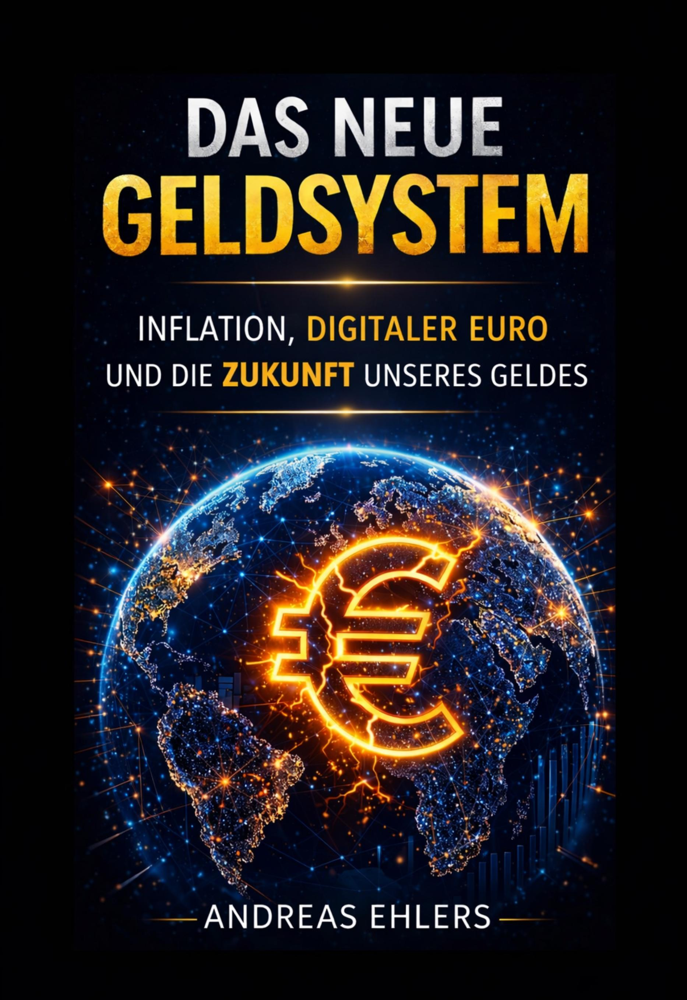

Drei Bücher über Inflation, digitalen Euro und die strukturellen Veränderungen unseres Geldsystems. Sachlich, fundiert, für jeden lesbar.
Alle Titel erschienen 2026 – von der Vermögensperspektive bis zur geopolitischen Geldordnung

Inflation, digitaler Euro und die Zukunft unseres Geldes
Die Synthese der Trilogie: Wie funktioniert unser Geldsystem wirklich – und warum verändert es sich gerade grundlegend? Von Fiatgeld über Staatsschulden und den digitalen Euro bis zur geopolitischen Währungsordnung. Systemebene trifft persönliche Perspektive, ohne zu vereinfachen.
Erschienen bei BoD – Books on Demand. Erhältlich als Taschenbuch und E-Book.
Zum BuchWarum verliert Geld schleichend an Wert – selbst wenn offizielle Inflationsraten moderat erscheinen? Dieses Buch erklärt die strukturellen Mechanismen des Fiat-Geldsystems und zeigt, warum Sachwerte eine ökonomisch folgerichtige Antwort sind.
Mehr erfahrenStabilität, Wettbewerb und die Zukunft der Geldordnung. Eine ordnungspolitische Analyse: Was kann der digitale Euro wirklich leisten – und was überdeckt er nur?
Mehr erfahrenOb Leserfeedback, Presseanfrage oder Gesprächswunsch – ich freue mich über Nachrichten.
Kontakt aufnehmen